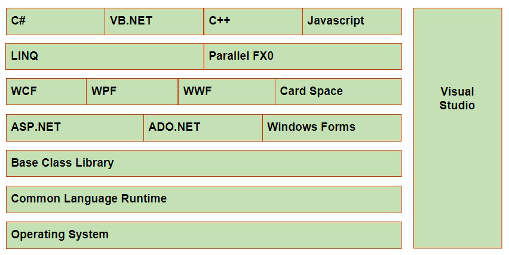
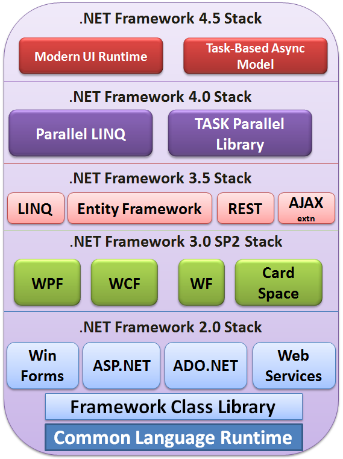
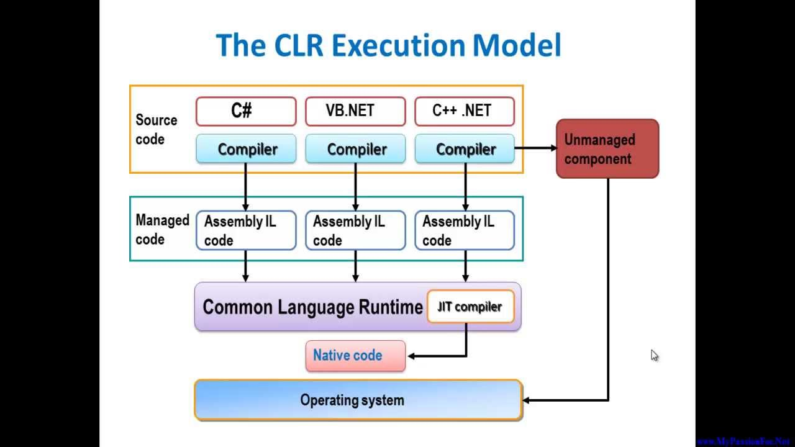

.NET (Network Enabled Technologies)
available in C:\Windows\Microsoft.NET\Framework64\v4.x.x
- a development & execution environment
- supports Object oriented languages #C, F#, VisualBasic, Visual C++
- features: Inter-operability, cross platform, baseclass library, lang independence, easy deployment, security


COMPONENTS OF .NET FRAMEWORK
- CLR - Common Language Runtime
- .NET framework class library
- CTS - Common Type System
- CLS - Common Language Specification
- Assemblies
- Windows Forms
- ASP.NET - Active Server Pages
- ADO.NET - Activex Data Objects
- WWF - Windows Workflow Foundation
- WPF - Windows Presentation Foundation
- WCF - Windows Communication Foundation
- Windows Cardspace
- LInQ - Language Integrated Query
- Parallel Programming
CLR - Common Language Runtime

- reponsible for allocating and deallocating memory for programs in runtime
- any code managed by CLR is called Managed Code
- 1. Language compilers produces MSIL(microsoft intermediate lang) code from src code
- 2. CLR's JustInTime compiler converts these MSIL code into Native Code
BCL - Base Class Library/ .NET framework Class Library
- provides predefined classes common for all the languages those supported by .NET
- need to use the SYNTAX corrosponding to the Classes
CTS - Common Type System
- set of datatypes common to the .net supported languages
- facilitates inter language communication
- Ex: in C#, int a=10
in VB Integer a=10
by using CTS, System.Int32 a=10
- System.Int64
System.Double
CLS - Common Language Specification
- subset of CTS
- provides set of rules to be followed by all lang compilers targetting CLR
- to ensure cross language communication
- ex: local variables must be initialized
abstract classes can't be instantiated
instance members must be only accessed through objects
Assemblies
- Compiled code ready for deployment with a version
- .exe(executable) or .dll(reusable)
- collection of datatypes & resources as a functional unit
- contains:
assembly metadata
type metadata
MSIL code
resources
- types: Private & Shared
- Private: specific to an application, may not contain a strong name
- Shared: resides in GAC, should contain a strong name
GAC - Global Assembly Cache
- System.dll resides in C:\Windows\Microsoft.NET\assembly\GAC_MSIL\System\v4.x.x
- gacutil.exe is used to add/remove dll files to/from GAC
Available IDEs
- Visual Studio
- Adobe Dreamweaver
- Frontpage
- Eclipse, Jbuilder, Intellij for JAVA apps
Visual Studio Overview
- for developing web-based, windows-based, console apps
- features: multi-monitor support
code editor
search as you type
call hierarchy(navigate the code as the control flows)
debugging
IDE features corrospond to current project(adding reference will link the compatible libraries to the version .net framework in use)
easy deployment
extension manager
code generation & text templates
help window
C# Features
- object oriented
- type safe
- versionale
- Inter-operability
- multi threaded
C# src file structure
using statement;
namespace declaration;
class declaration
Comments
- single line //
- multi line /* ..... */
- Documentation comments ///
Class
fundamental unit of a C# program, allows us to create a custom datatype by grouping variables & functions
program execution starts from Main() method & "String[] args" can be passed as command line arguments to Main()
Statement
unit of work that has be terminated by ";"
NameSpace
- group of logically related classes
- reduces name collisions
- within a namespace we can declare one or more
- classes
- interfaces
- delegates
- structs
- enums
- namespaces
namespace MyNameSpace{
class MyClass{
//variables;
//methods;
}
}
- MyClass can be accessed as "MyNameSpace.Myclass"
Keywords
- reserved words that convey a specific meaning to the compiler
- can be used as Identifiers if we prefix @ to the keyword
- switch is not a valid identifier
- @switch can be used as an identifier
- Contextual keywords are Keywords but not reserved, and they convey a specific meaning in a limited program context
- newly created keywords are added to Contextual keywords
Identifiers
names given to the componenents in a program (variables, methods, classes etc.)
Literals
values stored in variables
- Numeric (integer, floating)
- character (single character, strings)
- booleans
Constants
variables whose values can't be changed during program execution
const double pi=3.14
Variables
name given to a memory location
Data types
tells the type of data present in a variable
value types(int, double, etc.) & reference types (arrays, strings, etc.)
Value types
stores the data directly in the stack memory
Integral types
Integer types
- char - 2Bytes (Unicode)
- byte - 1B
- sbyte - 1B
- short - 2B
- ushort - 2B
- int - 4B
- uint - 4B
- long - 8B
- ulong - 8B
Floating point types
- float - 4B (7 decimal points)
- double - 8B (15-16 decimal points)
Decimal type
High precision floating point numbers - 16B (28-29 decimal points)
Booleans (true, false)
Struct types
to group multiple data types together
Enumerations
group of integer constants
gives a name to those integer constants
enum MyEnum{ val1, val2, val3, .....}
Reference Types
stores data in Heap memory and stores only the address/reference to the data in stack memory
- class
- interface
- delegates
- array
- string
- object
Variable scope
Member variables - declared directly in Class i.e, outside of methods & within the class
and accessible by all methods in the class
Local variables - declared inside a method, hence accessible only inside that method
method parameters also comes under local variables
Default values stored in All Data Types
| All integer types |
0 |
| char |
'\x000' |
| float |
0.0f |
| double |
0.0d |
| decimal |
0.0m |
| bool |
false |
| enum |
0 |
| all reference types |
null |
Boxing & Unboxing
Boxing: Value type -> reference type
Object obj = 10;
Unboxing: Reference type -> value type
Object obj = 10;
int num = (int) obj;
Type Casting
implicit( done by compiler) - can only convert to a higher data types in the hierarchy
explicit (manually by programmer) - data losses may occur when converting to lower types
Note
in switch, we must use break statement because C# don't allow fall-through
we can achieve fall-through by using goto statement or leaving a case block emppty
Operators
- Unary operators (+, -, ++, --)
- Arithmetic operators (+, -, *, /, %)
- String operators (+ concatenates two strings)
- Relational operators (<, >, <=, >=, ==, !=)
- Conditional operator ( exp1 ? exp2 : exp3)
- Logical operators ( !, &&, ||)
- Binary operators ( and &, or |, xor ^)
- Assignment operators (=, +=, -=, *=, /=, %=, &=, |=, ^=)
Flow control & Looping
- if-else
if - else if - else
- for
- while
- do-while
Arrays
group of elements of same data type
array_name.Length returns length of the array
dataType[] array_name = new dataType[size];
declaration: int[] arr_name = new int[size];
initialization: int[] arr_name = new int[] { 1, 2, 3, 4}
assignment:
int[] arr_name = new int[3];
arr_name[0]=1;
arr_name[1]=2;
arr_name[2]=3;
Multi dimensional arrays
2D array: int[,] myMatrix = new int[ m, n];
3D array: int[,,] myMatrix = new int[ x, y, z];
Jagged array
the array below contains 3 rows & the no.of columns may vary for different rows
int[][] myJaggedArr = new int[3][];
myJaggedArr[0] = new int[2]; //first row contains 2 columns
myJaggedArr[1] = new int[3]; //second row contains 3 columns
myJaggedArr[2] = new int[4]; //third row contains 4 columns
while traversing jagged array, inner for loop should use Length property of the corrosponding row because the size may be different for all rows
foreach loop
foreach(datatype var_name in exp){ ..... }
Methods & Method calling
a block of statements that performs a specific task
modifer type method_name( parameters ){
//body;
}
Method signature: method name, type of it's parameters uniquely identifies the method
parameter list is also known as method signature
calling a method
calling through class name: static methods are called using Class name
calling through objects of a class: normal methods are called using instances of a class
Parameter types (6)
-
value type parameters
obj.MyMethod( num1, num2); //num1, num2 are value types like int
-
reference parameters
modification of data in method will reflect in the variables of calling method
pass by reference: obj.MyMethod( ref num1, ref num2); //ref keyword should be indicated in method declaration also
-
output parameters
causes the variable to be passed by reference but mentions it as a output so it must be initialized in the Called Method
-
optional parameters
void MyMethod( int a, int b=10)
here b is optional parameter, we may/maynot pass the value of b from Calling method
must be declared after the required parameters
-
named arguments
void MyMethod ( int a, String name, double val) {....}
obj.MyMethod( name= "ashok", val=3.14, a=10);
-
parameter arrays
allows us to specify a 1D array that takes any no.of arguments as a single unit
params should be the last argument in the method declaration & only one param is allowed
void MyMethod( params int[] paraList){ ... }
obj.MyMethod( 10, 20, 30);
obj.MyMethod( 10, 30, 50, 70, 90);
OOPS features
- Class
- Object
- Inheritance
- Polymorphism
- Abstraction
- Encapsulation (binding data with the methods manipulate that data)
class is a blueprint
an object has 1. State (identity, attributes, state) 2. Behaviours (methods, events)
object is a real world entity made from a blueprint(Class)
Access specifiers
- public - visible everywhere
- private - only accessible inside the present class
- internal - only in the current Assembly
- protected - only accessible in current class & it's child class
- protected internal - accessible in containing program or assembly & in the child classes
member modifiers
- new - allows to create a method in child having the same signature as a method in parent
- abstract - to specify an incomplete componenent
- static - a member that don't belong to a specific instance, but to the Class
- readonly - constant fields are assigned during declaration or in constructor
- sealed - a member that can't be inherited
- virtual - specifies a method may be overridden in childes
- override - specifies that childe class provides a new implementation for virtual/abstract method from parent
Encapsulation
- gives ability to hide data from users
- implemented using private keywords
- access to data is controlled using getters & setters
- properties - class member to write & read data from private data members
access_specifier return_type PropName{
get{}
set{}
}
public string EmpName{
get{}
set{}
}
- read only - get
- write only - set
- read write - both get & set
- Asymmetric properties - using different visibility levels for set & get accessors of a property
visibility of set&get should be strict subset of visibility level of the property
- automatic properties - by default the field will be private
public string EmpName{ get; set;}
Indexer
- allows an object to be accessed as an array
- implemented using "this" keyword
class MyClass{
public string[] Emps= new string[5];
public string this[int i]{
get{ return Emps[i]; }
set{ Emps[i] = value; }
}
}
...
MyClass obj= new MyClass();
obj[1]= "ashok";
Console.WriteLine(obj[1]);